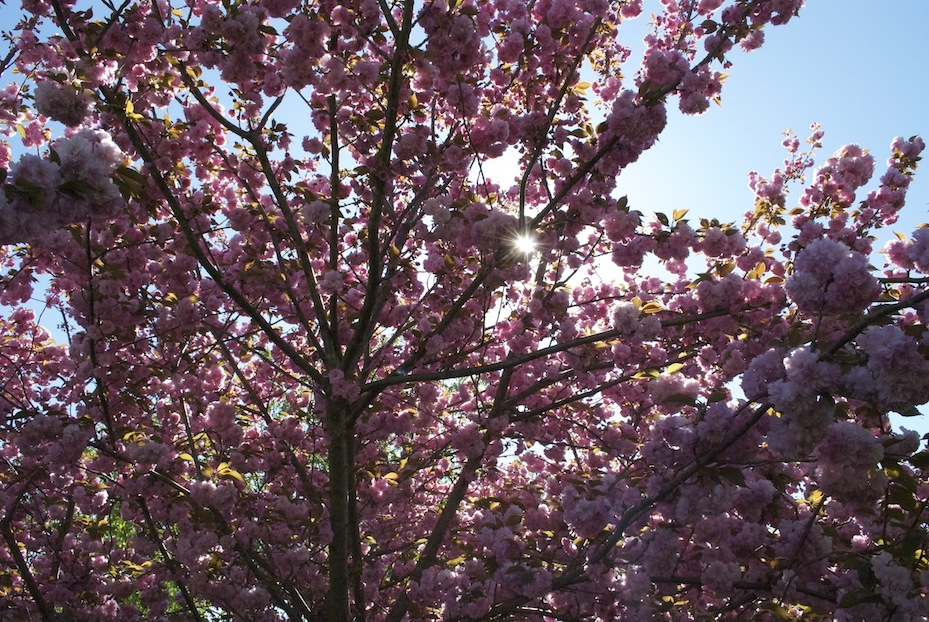
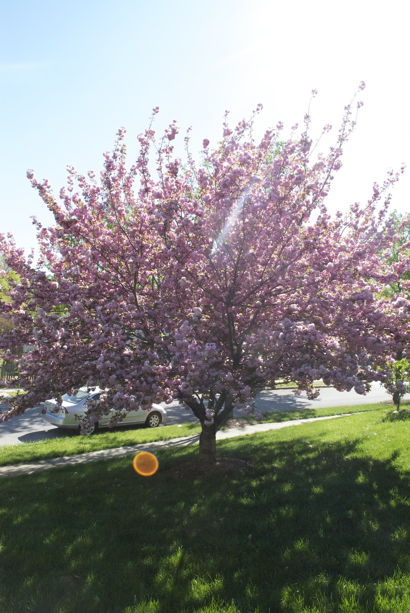

        <div class="pageloader_inner wrapper clearfix">
        <div id="entry-single">
            
            <aside id="sidebar" class="right_float">
            	<section class="sidebar_section">
                	<div class="entry-headline">
                        <div class="entry-title"><h4>Morning Cherry</h4></div>
                        <div class="entry-date">April 15, 2012</div>
                    </div>
                    
                    <div class="entry-info">
                        <p>
			    Commissioned photo of Cherry Tree
                        </p>
                        <p>
			   NIKON D60 Focal l:18 F:13
                        </p>
                    </div>
                
                </section>
            </aside>
            
            <article id="maincontent" class="left_float">
              	
            	
            	
			</article> <!-- END #maincontent -->
    	</div>        
	</div>
